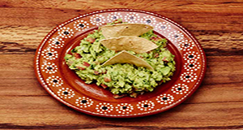

Guacuamole
Contexto Histórico
o Guacamole é uma iguaria típica da culinária do México, servida com uma grande variedade de pratos e no geral vai junto com pico-de-gallo e sour cream. Para quem não conhece, o pico-de-gallo é na verdade uma salada feita com pedaços de tomate, misturada com cebola, cebolinha e folhas de coentro e temperada com suco de limão e óleo; muitas vezes, leva também grãos de milho amarelo, doce ou cozido, o que lhe dá um aspecto muito atraente – e justifica o nome: “bico de galo”, ou seja, “comida para galinhas”.
O prato parece um purê de abacate ou avocado bem temperado, que funciona como um complemento da salada, tendo sido exportado para todas as partes do mundo onde existe comida mexicana, mesmo que esta seja alterada de acordo com os gostos locais. O nome “Guacamole” tem origens indígenas: “Ahuacatl” (abacate) e “mole”, um nome genérico para “molho”.
Segundo a tradição pré-hispânica, o jeito de se fazer Guacamole foi ensinado ao povo Tolteca pelo Deus Quetzalcóatl. Esta iguaria foi criada pela cultura asteca, mas, após a chegada dos colonizadores espanhóis, foi exportada para o continente europeu.
Diz a lenda que o prato mexicano foi servido pela primeira vez no Brasil por volta do ano de 1684, pela cozinheira Eduarda Neves, e a partir dessa data começou a ser inserido também na culinária brasileira que é super miscigenada.

Ingredientes:
1 abacate brasileiro médio (ou 4 avocados)
1 tomate grande sem sementes
1 cebola pequena
2 dentes de alho bem socados
1 maço de coentro
1 pimenta malagueta sem sementes
suco de 1 limão grande
azeite extra virgem
sal
MODO DE PREPARO:
Amasse o abacate com um garfo, acrescente o alho socado, o suco de limão, sal e azeite a gosto e misture como um purê.
Pique a cebola, o tomate e o coentro. Pique bem a pimenta.
Acrescente os ingredientes picados ao "purê" de abacate.
Sirva com chips, crackers, tacos, no burrito ou mesmo junto com arroz e feijão.